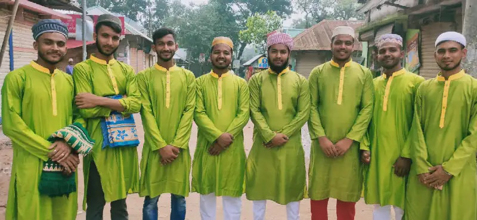

Latest News
Latest News Friends
Friends Group
Group Marketplace
Marketplace watch
watch Web Developers
Web Developers Web Design course
Web Design course  Full Stack Developers
Full Stack Developers Website Experts
Website Experts
Post Story
Tamim Ahmed
Faruk Shuvo
Sworgo
Shorif magi
 Live video
Live video Photo/video
Photo/video Feeling/Activity
Feeling/Activityقال رسول هللا صلى هللا عليه وسلم كل معروف صدقة،والدال على اخلري كفاعله من دعا إىل هدى كان له من األجر مثل أجور من تبعه ال ينقص ذلك من أجورهم شيئا (البخارى ومسلم) . (املائدة) وَتَعاوَنواعَلَى الب ِوَالتَّقوى ۖوَال تَعاوَنواعَلَى اإل ث وَالعُدوان (مسلم). hadith

 999k
999k 509k
509k 499k
499kA daʿif hadith is a hadith in which theconsidered conditions of soundness and fairness are completely or partially absent and whose narrator(s) have been criticized due to an anomaly (shudhudh), disclaim (nakarah), or impairing defect (ʿillah). According to this understanding, the categories of daʿif hadith are numerous and are abundant both independently and compounded [due to the presence and absence of the conditions of soundness].. hadith
 1.2m709k599k
1.2m709k599kA daʿif hadith is a hadith in which theconsidered conditions of soundness and fairness are completely or partially absent and whose narrator(s) have been criticized due to an anomaly (shudhudh), disclaim (nakarah), or impairing defect (ʿillah). According to this understanding, the categories of daʿif hadith are numerous and are abundant both independently and compounded [due to the presence and absence of the conditions of soundness].. hadith
1.2m709k599kA daʿif hadith is a hadith in which theconsidered conditions of soundness and fairness are completely or partially absent and whose narrator(s) have been criticized due to an anomaly (shudhudh), disclaim (nakarah), or impairing defect (ʿillah). According to this understanding, the categories of daʿif hadith are numerous and are abundant both independently and compounded [due to the presence and absence of the conditions of soundness].. hadith
1.2m709k599kوجييبون ِب َن اعْت بَار تعدد الطِرق ف احلْسن لَْيسَ وَحَْيثُ حكم ابجتماع احلْسن والغرابة فَالْمُرَاد ب ه قسم آخرعلى اإلْ طْالَ ق بل ف قسم مْنهبذلك إ ىلَ اخْ ت الَ ف الطِرق ِب َن جَاءَ ف بعض الطِرق غَر يبا وَف ب َعْضهَا حسنا وَقَالَ بَعضهم إ نَّه أَشَارَيشك ويِتدد ف أَنه غَر يب أَو حسن لعدم مَعْرفَته جزما وَقيل الْوَاو ِبَعْىن أَو ِب َنَّهُ وَقيل املُرَاد ابحلْسن هَهُنَا لَْيسَ مَعْنَاهُ االصطالحي بل اللِغَو يِ ِبَعْىن مَا مي يل إ لَْيه الطَّْبع وَهَذَا القَوْل بعيد جدا.. hadith
1.2m709k599kThe varying levels of the Sahih and Hasan hadith, both in-itself and through corroboration, are in accordance with the varying levels and ranks in the perfection of the qualities taken into consideration in understanding [the Sahih and Hasan hadith] while obviously comprising the fundamental characteristics of being Sahih and Hasan... hadith
1.2m709k599kপ্রতিকুলতাকে ভয় পাওয়া যুদ্ধে নামার আগেই পরাজয় বরণ করা". siraj
1.2m709k599k